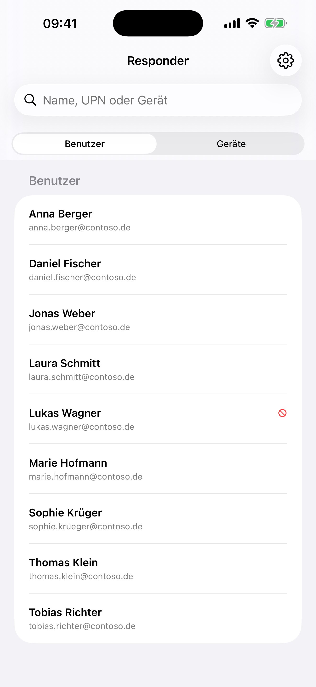
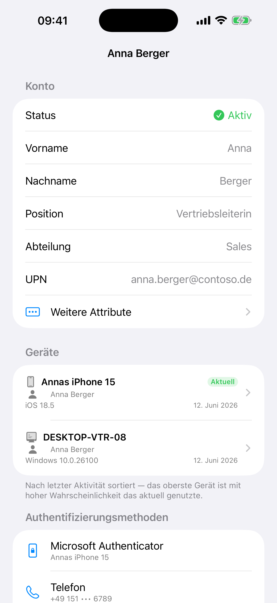
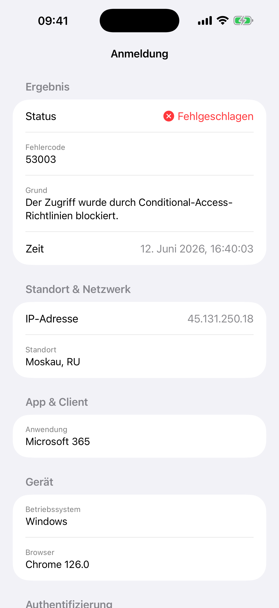
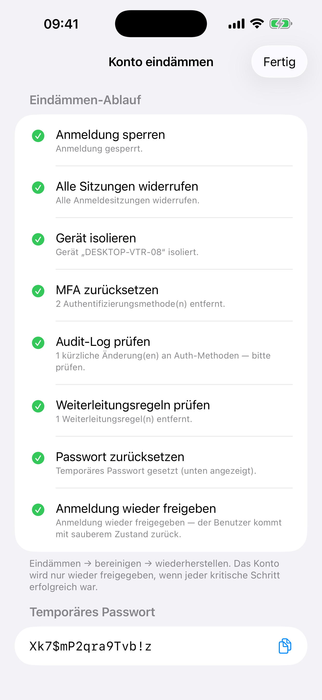

Security Responder
M365 Incident Response for iOS
Kompromittierte Microsoft-365-Konten direkt am iPhone eindämmen — die im Ernstfall entscheidenden Schritte, die die Microsoft-365-Admin-App mobil nicht abdeckt:
- Benutzer suchen und untersuchen
- Anmeldungen mit IP und Land sowie Audit-Log (neu registrierte MFA-Methoden) auf einen Blick
- Anmeldung sperren, alle Sitzungen widerrufen, Passwort & MFA zurücksetzen, Temporary Access Pass ausstellen
- Schädliche Weiterleitungsregeln erkennen und entfernen
- Eindämmen-Playbooks in einem Schritt: sperren → widerrufen → bereinigen → wieder freigeben — wahlweise mit Geräte-Isolation
- Gerät über Microsoft Defender for Endpoint isolieren (vollständig oder selektiv) und wieder freigeben
- App-Sperre per Face ID / Code, Mehr-Tenant-Verwaltung für Partner/MSPs




Contain compromised Microsoft 365 accounts from your iPhone: review sign-ins (IP & country) and audit logs, block sign-in, revoke all sessions, reset passwords and MFA, remove malicious forwarding rules, and run the whole containment chain in one tap — the hard containment steps the M365 Admin app lacks.